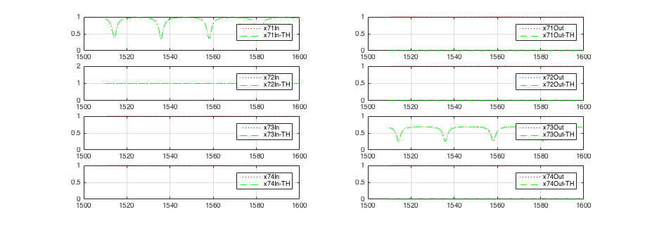
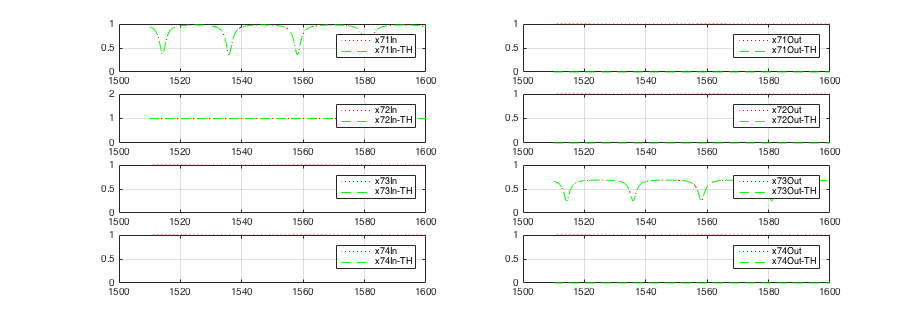
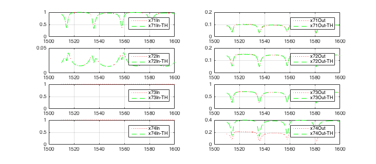
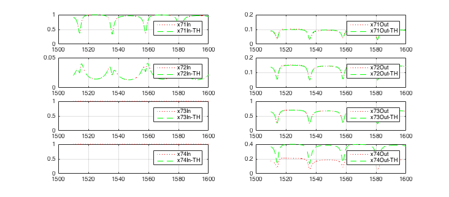

set(0,'DefaultFigureWindowStyle','docked'); %set(0,'DefaultFigureWindowStyle','normal'); set(0,'defaultAxesXGrid','on'); set(0,'defaultAxesYGrid','on'); %set(groot,'defaultAxesLineStyleOrder',['-' '--' '.' '-.']); set(groot,'defaultAxesColorOrder',[1 0 0;0 1 0;0 0 1;1 1 0],'defaultAxesLineStyleOrder',{'--',':'}); %set(0,'DefaultAxesColorOrder',[2 7 0 0],'DefaultAxesLineStyleOrder','-|--|:|-.'); set(0,'DefaultLineMarkerSize',1); %set(0,'defaultYGrid','Minor'); %set(0,'AxesYMinorGrid','on'); %set(0,'color','RED'); %set(0,'defaultXMinorGrid','on'); %set(0,'Grid','minor'); %set(0,'GridVisible','TRUE'); %GridVisible = TRUE; %set(0,'YMinorGrid','on'); %set(gcf, 'position',[0 0 40 100]); base1= 'ringWGXRCross'; Ref1=0.1; TH1=0.7; Right1= 0.15; Left1= 0.4; base2= 'ringWGXRCrossIdeal'; Ref2=0.0; TH2=1.0; Right2= 0.0; Left2= 0.0; base3= 'ringWGXRCrossTH'; Ref3=0.0; TH3=0.7; Right3= 0.0; Left3= 0.0; base4= 'ringWGXRCrossRef'; Ref4=0.1; TH4=0.7; Right4= 0.0; Left4= 0.0; base5= 'ringWGXRCrossRefRight'; Ref5=0.1; TH5=0.7; Right5= 0.15; Left5= 0.0; base6= 'ringWGXRCrossRight'; Ref6=0.0; TH6=0.7; Right6= 0.15; Left6= 0.0; base7= 'ringWGXRCrossLeft'; Ref7=0.0; TH7=0.7; Right7= 0.0; Left7= 0.2; basePath = '/Users/sanam/phd/GitThesis/optics/scripts/matlabSpice/cross/'; for i=1:7 bName=(strcat('base',num2str(i))); refName=(strcat('Ref',num2str(i))); thName=(strcat('TH',num2str(i))); rightName=(strcat('Right',num2str(i))); leftName=(strcat('Left',num2str(i))); base=eval(bName); Ref=eval(refName); TH=eval(thName); Right=eval(rightName); Left=eval(leftName); display(base) %base = 'ringWGXRCross'; %display(base) outputFile = strcat(base,'.1-DC.2d_dat'); basefile = strcat(base,'.sp'); baseFileFull = strcat(basePath,basefile); dateStamp = datestr(now,'ddmmmyy_HHMM'); %display(dateStamp); snapshot = strcat('ringCross_', dateStamp); %display(snapshot); % mkdir(snapshot); snapshotFull=strcat('./',snapshot); % cd(snapshotFull); %system(pwd); %output = load('ringsCrossComb.0-DC.2d_dat'); display(outputFile) output = load(outputFile); %outputFile; %x=ringCross_0_DC(:,1); %N11In=ringCross_0_DC(:,2); x=output(:,1); %Circuit 3.5, (Ring6, x7, w1-4) N61In=output(:,2); N62In=output(:,3); N63In=output(:,4); N64In=output(:,5); N61Out=output(:,6); N62Out=output(:,7); N63Out=output(:,8); N64Out=output(:,9); x71In=output(:,10); x72In=output(:,11); x73In=output(:,12); x74In=output(:,13); x71Out=output(:,14); x72Out=output(:,15); x73Out=output(:,16); x74Out=output(:,17); w3eIn=output(:,18); w4nIn=output(:,19); w3eOut=output(:,20); w4nOut=output(:,21); N61In=10.^(N61In/20); N62In=10.^(N62In/20); N63In=10.^(N63In/20); N64In=10.^(N64In/20); N61Out=10.^(N61Out/20); N62Out=10.^(N62Out/20); N63Out=10.^(N63Out/20); N64Out=10.^(N64Out/20); x71In=10.^(x71In/20); x72In=10.^(x72In/20); x73In=10.^(x73In/20); x74In=10.^(x74In/20); x71Out=10.^(x71Out/20); x72Out=10.^(x72Out/20); x73Out=10.^(x73Out/20); x74Out=10.^(x74Out/20); w3eIn=10.^(w3eIn/20); w4nIn=10.^(w4nIn/20); w3eOut=10.^(w3eOut/20); w4nOut=10.^(w4nOut/20); %Theory x71In_TH = N63Out; % will have a phase shift because of the waveguide wg1 x71Out_TH = Ref.*x71In_TH; % N61In_TH = Input of Ring 6, CWSourse N61Out_TH = x71Out_TH; % Through of Ring 6 with input as N63In_TH % N63Out is the through port of Ring 6 N63In_TH = x71Out_TH; x72Out_TH=Right.*x71In; x72In_TH = N64Out; % will have a phase shift because of the waveguide wg1 % N62In_TH = Drop port of Ring 6 and % % Through of Ring 6 with input as N64In N62Out_TH = 0 ; x73In_TH = 0 ;%(TBD ?) x73Out_TH=TH.*x71In; x74In_TH = 0 ; %(TBD ?) x74Out_TH=Left.*x71In; % N64Out is the Add port of Ring 6 and % Drop of Ring 2 with Input N63In N64In_TH = x72Out_TH; w3eIn_TH= 0; w3eOut_TH= x73Out; % will have a phase shift because of the waveguide w4nIn_TH= 0; w4nOut_TH= x74Out; % will have a phase shift because of the waveguide %figure; % % %%Circuit 1 % % figure('name','Circuit 1, Ring 1 IN OUT signals','numbertitle','off'); % subplot(4,2,1); % plot(x,N11In); % subplot(4,2,3); % plot(x,N12In); % subplot(4,2,5); % plot(x,N13In); % subplot(4,2,7); % plot(x,N14In); % subplot(4,2,2); % plot(x,N11Out); % subplot(4,2,4); % plot(x,N12Out); % subplot(4,2,6); % plot(x,N13Out); % subplot(4,2,8); % plot(x,N14Out); % % % %Circuit 2 % figure('name','Circuit 2, xcross 1 IN OUT signals','numbertitle','off'); % subplot(4,2,1); % plot(x,x11In); % subplot(4,2,3); % plot(x,x12In); % subplot(4,2,5); % plot(x,x13In); % subplot(4,2,7); % plot(x,x14In); % subplot(4,2,2); % plot(x,x11Out,x,x11Out_TH); % legend('x11Out','x11Out-TH'); % subplot(4,2,4); % plot(x,x12Out,x,x12Out_TH); % legend('x12Out','x12Out-TH'); % subplot(4,2,6); % plot(x,x13Out,x,x13Out_TH); % legend('x13Out','x13Out-TH'); % subplot(4,2,8); % plot(x,x14Out,x,x14Out_TH); % legend('x14Out','x14Out-TH'); % % %Circuit 3 % figure('name','Circuit 3, Ring 2 IN OUT signals','numbertitle','off'); % subplot(4,2,1); % plot(x,N21In); % subplot(4,2,3); % plot(x,N22In); % subplot(4,2,5); % plot(x,N23In,x,N23In_TH); % legend('N23In','N23In-TH'); % subplot(4,2,7); % plot(x,N24In,x,N24In_TH); % legend('N24In','N24In-TH'); % subplot(4,2,2); % plot(x,N21Out,x,N21Out_TH); % legend('N21Out','N21Out-TH'); % subplot(4,2,4); % plot(x,N22Out,x,N22Out_TH); % legend('N22Out','N22Out-TH'); % subplot(4,2,6); % plot(x,N23Out); % subplot(4,2,8); % plot(x,N24Out); % %legend('N24Out','N24Out-TH'); % % figure('name','Circuit 3, Ring 2 Add/drop relation 3IN/4OUT 1IN/2OUT signals','numbertitle','off'); % subplot(3,1,1); % plot(x,N23In,x,N24Out); % legend('N23In','N24Out'); % subplot(3,1,2); % plot(x,N21In,x,N22In); % legend('N21In','N22In'); % subplot(3,1,3); % plot(x,N23In./N24Out,x,N21In./N22In); % legend('Ratio 3,4', 'Ratio 1,2'); % figure('name','Circuit 3, xcross 2 IN OUT signals','numbertitle','off'); % subplot(4,2,1); % plot(x,x21In,x,x21In_TH); % legend('x21In','x21In-TH'); % subplot(4,2,3); % plot(x,x22In); % %legend('x22In','x22In_TH'); % subplot(4,2,5); % plot(x,x23In); % legend('x23In'); % subplot(4,2,7); % plot(x,x24In); % legend('x24In'); % subplot(4,2,2); % plot(x,x21Out,x,x21Out_TH); % legend('x21Out','x21Out-TH'); % subplot(4,2,4); % plot(x,x22Out,x,x22Out_TH); % legend('x22Out','x22Out-TH'); % subplot(4,2,6); % plot(x,x23Out,x,x23Out_TH); % legend('x23Out','x23Out-TH'); % subplot(4,2,8); % plot(x,x24Out,x,x24Out_TH); % legend('x24Out','x24Out-TH'); % % %Compare Ring2 and Ring1 % % figure('name','Ring2 VS Ring1 IN OUT signals','numbertitle','off'); % subplot(4,2,1); % plot(x,N21In,x,N11In); % legend('Ring2','Ring1'); % grid on; % grid minor; % subplot(4,2,3); % plot(x,N22In,x,N12In); % legend('Ring2','Ring1'); % subplot(4,2,5); % plot(x,N23In,x,N13In); % legend('Ring2','Ring1'); % subplot(4,2,7); % plot(x,N24In,x,N14In); % legend('Ring2','Ring1'); % subplot(4,2,2); % plot(x,N21Out,x,N11Out); % legend('Ring2','Ring1'); % subplot(4,2,4); % plot(x,N22Out,x,N12Out); % legend('Ring2','Ring1'); % subplot(4,2,6); % plot(x,N23Out,x,N13Out); % legend('Ring2','Ring1'); % subplot(4,2,8); % plot(x,N24Out,x,N14Out); % legend('Ring2','Ring1'); % % figure('name','Xcross2 VS XCcross1 IN OUT signals','numbertitle','off'); % subplot(4,2,1); % plot(x,x21In,x,x11In); % legend('Xcross2','Xcross1'); % subplot(4,2,3); % plot(x,x22In,x,x12In); % legend('Xcross2','Xcross1'); % subplot(4,2,5); % plot(x,x23In,x,x13In); % legend('Xcross2','Xcross1'); % subplot(4,2,7); % plot(x,x24In,x,x14In); % legend('Xcross2','Xcross1'); % subplot(4,2,2); % plot(x,x21Out,x,x11Out); % legend('Xcross2','Xcross1'); % subplot(4,2,4); % plot(x,x22Out,x,x12Out); % legend('Xcross2','Xcross1'); % subplot(4,2,6); % plot(x,x23Out,x,x13Out); % legend('Xcross2','Xcross1'); % subplot(4,2,8); % plot(x,x24Out,x,x14Out); % legend('Xcross2','Xcross1'); %Circuit 3.5 figure('name',strcat(base,' Circuit 3.5, Ring 6 IN OUT signals'),'numbertitle','off'); subplot(4,2,1); plot(x,N61In); subplot(4,2,3); plot(x,N62In); subplot(4,2,5); plot(x,N63In,':',x,N63In_TH); legend('N63In','N63In-TH'); subplot(4,2,7); plot(x,N64In,':',x,N64In_TH); legend('N64In','N64In-TH'); subplot(4,2,2); plot(x,N61Out,':',x,N61Out_TH); legend('N61Out','N61Out-TH'); subplot(4,2,4); plot(x,N62Out,':',x,N62Out_TH); legend('N62Out','N62Out-TH'); subplot(4,2,6); plot(x,N63Out); subplot(4,2,8); plot(x,N64Out); figure('name', strcat(base,' Circuit 3.5, xcross 7 IN OUT signals'),'numbertitle','off'); subplot(4,2,1); plot(x,x71In,':',x,x71In_TH); legend('x71In','x71In-TH'); subplot(4,2,3); plot(x,x72In,':',x,x72In_TH); legend('x72In','x72In-TH'); subplot(4,2,5); plot(x,x73In,':',x,x73In_TH); legend('x73In','x73In-TH'); subplot(4,2,7); plot(x,x74In,':',x,x74In_TH); legend('x74In','x74In-TH'); subplot(4,2,2); plot(x,x71Out,':',x,x71Out_TH); legend('x71Out','x71Out-TH'); subplot(4,2,4); plot(x,x72Out,':',x,x72Out_TH); legend('x72Out','x72Out-TH'); subplot(4,2,6); plot(x,x73Out,':',x,x73Out_TH); legend('x73Out','x73Out-TH'); subplot(4,2,8); plot(x,x74Out,':',x,x74Out_TH); legend('x74Out','x74Out-TH'); figure('name',strcat(base,' Circuit 3.5, waveguides 1-4 IN OUT signals'),'numbertitle','off'); subplot(4,2,1); plot(x,N63In,':',x,x71Out); legend('wg1,P1In','wg1 P2Out'); subplot(4,2,2); plot(x,N63Out,':',x,x71In); legend('wg1,P1Out','wg1 P2In'); subplot(4,2,3); plot(x,N64In,':',x,x72Out); legend('wg2,P1In','wg2 P2Out'); subplot(4,2,4); plot(x,N64Out,':',x,x72In); legend('wg2,P1Out','wg2 P2In'); subplot(4,2,5); plot(x,x73Out,':',x,w3eOut); legend('wg3,P1Out','wg3 P2Out'); subplot(4,2,6); plot(x,x73In,':',x,w3eIn); legend('wg3,P1In','wg3 P2In'); subplot(4,2,7); plot(x,x74In,':',x,w4nIn); legend('wg4,P1In','wg4 P2In'); subplot(4,2,8); plot(x,x74Out,':',x,w4nOut); legend('wg4,P1Out','wg4 P2Out'); figure('name',strcat(base,' Circuit 3.5, Ring 6 In/TH relation 1In -> 3Th 3In --> 1Th signals'),'numbertitle','off'); subplot(3,1,2); plot(x,N61In,x,N63Out); legend('N61In','N63Out'); subplot(3,1,1); plot(x,N63In,x,N61Out); legend('N63In','N61Out'); subplot(3,1,3); plot(x,N63Out./N61In,x,N61Out./N63In); legend('Ratio N3(TH, Output)/N1(Input)', 'Ratio N1(TH, Output)/N3(Input)'); figure('name',strcat(base,' Circuit 3.5, Ring 6 In/Drop relation 1In/2Drop 3In/4Drop signals'),'numbertitle','off'); subplot(3,1,1); plot(x,N61In,x,N62In); legend('N61In','N62In'); subplot(3,1,2); plot(x,N63In,x,N64Out); legend('N63In','N64Out'); subplot(3,1,3); plot(x,N62In./N61In,x,N64Out./N63In); legend('Ratio N2(Drop, Output)/N1(Input)', 'Ratio N4(Drop, Output)/N3(Input)'); % %Compare Ring6 and Ring2 and Ring1 % % figure('name','Ring 6 VS Ring2 VS Ring1 IN OUT signals','numbertitle','off'); % subplot(4,2,1); % plot(x,N61In,x,N21In,x,N11In); % legend('Ring6','Ring2','Ring1'); % grid on; % grid minor; % subplot(4,2,3); % plot(x,N62In,x,N22In,x,N12In); % legend('Ring6','Ring2','Ring1'); % subplot(4,2,5); % plot(x,N63In,x,N23In,x,N13In); % legend('Ring6','Ring2','Ring1'); % subplot(4,2,7); % plot(x,N64In,x,N24In,x,N14In); % legend('Ring6','Ring2','Ring1'); % subplot(4,2,2); % plot(x,N61Out,x,N21Out,x,N11Out); % legend('Ring6','Ring2','Ring1'); % subplot(4,2,4); % plot(x,N62Out,x,N22Out,x,N12Out); % legend('Ring6','Ring2','Ring1'); % subplot(4,2,6); % plot(x,N63Out,x,N23Out,x,N13Out); % legend('Ring6','Ring2','Ring1'); % subplot(4,2,8); % plot(x,N64Out,x,N24Out,x,N14Out); % legend('Ring6','Ring2','Ring1'); % % % figure('name','Circuit 3.5, Ring 5 Add/drop relation 3IN/4OUT 1IN/2OUT signals','numbertitle','off'); % subplot(3,1,1); % plot(x,N63In,x,N64Out); % legend('N63In','N64Out'); % subplot(3,1,2); % plot(x,N61In,x,N62In); % legend('N61In','N62In'); % subplot(3,1,3); % plot(x,N63In./N64Out,x,N61In./N62In); % legend('Ratio 3,4', 'Ratio 1,2'); % % % figure('name','Xcross7 VS Xcross2 VS XCcross1 IN OUT signals','numbertitle','off'); % subplot(4,2,1); % plot(x,x71In,x,x21In,x,x11In); % legend('Xcross7','Xcross2','Xcross1'); % subplot(4,2,3); % plot(x,x72In,x,x22In,x,x12In); % legend('Xcross7','Xcross2','Xcross1'); % subplot(4,2,5); % plot(x,x73In,x,x23In,x,x13In); % legend('Xcross7','Xcross2','Xcross1'); % subplot(4,2,7); % plot(x,x74In,x,x24In,x,x14In); % legend('Xcross7','Xcross2','Xcross1'); % subplot(4,2,2); % plot(x,x71Out,x,x21Out,x,x11Out); % legend('Xcross7','Xcross2','Xcross1'); % subplot(4,2,4); % plot(x,x72Out,x,x22Out,x,x12Out); % legend('Xcross7','Xcross2','Xcross1'); % subplot(4,2,6); % plot(x,x73Out,x,x23Out,x,x13Out); % legend('Xcross7','Xcross2','Xcross1'); % subplot(4,2,8); % plot(x,x74Out,x,x24Out,x,x14Out); % legend('Xcross7','Xcross2','Xcross1'); clear; base1= 'ringWGXRCross'; Ref1=0.1; TH1=0.7; Right1= 0.15; Left1= 0.4; base2= 'ringWGXRCrossIdeal'; Ref2=0.0; TH2=1.0; Right2= 0.0; Left2= 0.0; base3= 'ringWGXRCrossTH'; Ref3=0.0; TH3=0.7; Right3= 0.0; Left3= 0.0; base4= 'ringWGXRCrossRef'; Ref4=0.1; TH4=0.7; Right4= 0.0; Left4= 0.0; base5= 'ringWGXRCrossRefRight'; Ref5=0.1; TH5=0.7; Right5= 0.15; Left5= 0.0; base6= 'ringWGXRCrossRight'; Ref6=0.0; TH6=0.7; Right6= 0.15; Left6= 0.0; base7= 'ringWGXRCrossLeft'; Ref7=0.0; TH7=0.7; Right7= 0.0; Left7= 0.2; basePath = '/Users/sanam/phd/GitThesis/optics/scripts/matlabSpice/cross/'; end
base = ringWGXRCross outputFile = ringWGXRCross.1-DC.2d_dat base = ringWGXRCrossIdeal outputFile = ringWGXRCrossIdeal.1-DC.2d_dat base = ringWGXRCrossTH outputFile = ringWGXRCrossTH.1-DC.2d_dat base = ringWGXRCrossRef outputFile = ringWGXRCrossRef.1-DC.2d_dat base = ringWGXRCrossRefRight outputFile = ringWGXRCrossRefRight.1-DC.2d_dat base = ringWGXRCrossRight outputFile = ringWGXRCrossRight.1-DC.2d_dat base = ringWGXRCrossLeft outputFile = ringWGXRCrossLeft.1-DC.2d_dat
 
 
 
